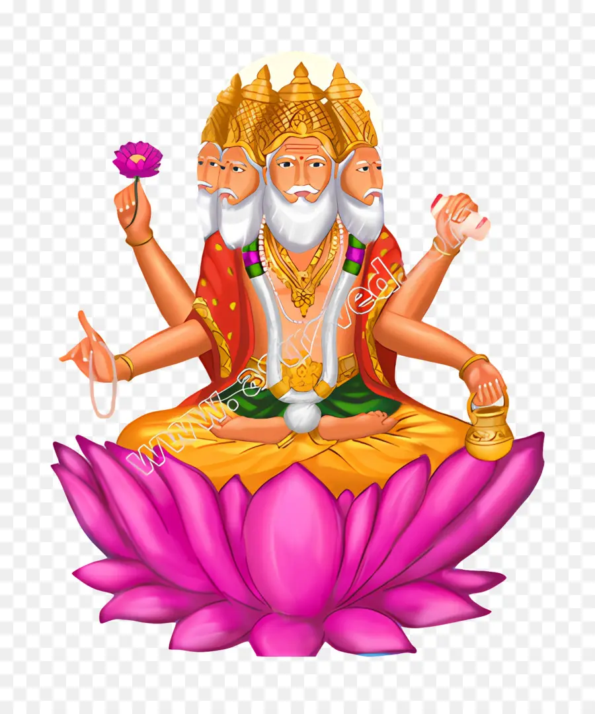

Here's a detailed exploration of 50 Hindu gods along with their avatars:
 Vishnu and His Avatars:Vishnu, one of the principal deities in Hinduism, is revered as the preserver and protector of the universe. He is often depicted with four arms holding a discus (Sudarshana Chakra), a conch shell (Panchajanya), a lotus flower (Padma), and a mace (Kaumodaki). Vishnu is believed to incarnate on Earth whenever dharma (righteousness) is threatened, taking various forms known as avatars. These avatars play crucial roles in restoring balance and order in the universe. Here are some of Vishnu's avatars:
Vishnu and His Avatars:Vishnu, one of the principal deities in Hinduism, is revered as the preserver and protector of the universe. He is often depicted with four arms holding a discus (Sudarshana Chakra), a conch shell (Panchajanya), a lotus flower (Padma), and a mace (Kaumodaki). Vishnu is believed to incarnate on Earth whenever dharma (righteousness) is threatened, taking various forms known as avatars. These avatars play crucial roles in restoring balance and order in the universe. Here are some of Vishnu's avatars:
Matsya Avatar: Matsya, meaning "fish," is Vishnu's first avatar. According to Hindu mythology, Matsya saved the sage Manu and the sacred scriptures (Vedas) from a great flood by rescuing them on his back.
Kurma Avatar: Kurma, meaning "turtle," is Vishnu's second avatar. In this form, Vishnu took the shape of a giant turtle to support the Mandara mountain during the churning of the cosmic ocean (Samudra Manthan).
Varaha Avatar: Varaha, meaning "boar," is Vishnu's third avatar. Vishnu assumed the form of a boar to rescue the earth goddess, Bhudevi, from the demon Hiranyaksha, who had submerged her in the cosmic ocean.
 Narasimha Avatar: Narasimha, meaning "man-lion," is Vishnu's fourth avatar. He appeared as a half-man, half-lion to defeat the demon king Hiranyakashipu, who was granted a boon of invincibility against all beings except those created by Brahma.
Narasimha Avatar: Narasimha, meaning "man-lion," is Vishnu's fourth avatar. He appeared as a half-man, half-lion to defeat the demon king Hiranyakashipu, who was granted a boon of invincibility against all beings except those created by Brahma.
Vamana Avatar: Vamana, meaning "dwarf," is Vishnu's fifth avatar. In this form, Vishnu took the guise of a dwarf Brahmin to subdue the demon king Bali, who had conquered the three worlds.
 Parashurama Avatar: Parashurama, meaning "Rama with the axe," is Vishnu's sixth avatar. He was born as a Brahmin warrior to rid the world of corrupt Kshatriya rulers who had abused their power.
Parashurama Avatar: Parashurama, meaning "Rama with the axe," is Vishnu's sixth avatar. He was born as a Brahmin warrior to rid the world of corrupt Kshatriya rulers who had abused their power.
Rama Avatar: Rama is Vishnu's seventh avatar and is revered as the ideal king and embodiment of dharma. He is the protagonist of the Hindu epic Ramayana, where he defeats the demon king Ravana to rescue his wife Sita.
Krishna Avatar: Krishna is Vishnu's eighth avatar and is one of the most popular deities in Hinduism. He is known for his role in the Mahabharata as the charioteer of Arjuna and for delivering the teachings of the Bhagavad Gita.
.png) Kalki Avatar: Kalki is Vishnu's tenth and final avatar, who is prophesied to appear at the end of the Kali Yuga (the current age of darkness) to rid the world of evil and establish righteousness.
Kalki Avatar: Kalki is Vishnu's tenth and final avatar, who is prophesied to appear at the end of the Kali Yuga (the current age of darkness) to rid the world of evil and establish righteousness.
 Shiva and His Forms:Shiva, one of the principal deities in Hinduism, is revered as the destroyer and transformer of the universe. He is often depicted with a third eye on his forehead, a crescent moon adorning his hair, a snake around his neck, and a trident (Trishula) in his hand. Shiva has various forms and manifestations, each representing different aspects of his divine nature:
Shiva and His Forms:Shiva, one of the principal deities in Hinduism, is revered as the destroyer and transformer of the universe. He is often depicted with a third eye on his forehead, a crescent moon adorning his hair, a snake around his neck, and a trident (Trishula) in his hand. Shiva has various forms and manifestations, each representing different aspects of his divine nature:
Rudra: Rudra is one of the earliest forms of Shiva, associated with storms, winds, and the destructive forces of nature. Rudra is depicted as a fierce deity, often invoked for protection and healing.
Nataraja: Nataraja, meaning "Lord of the Dance," is a famous depiction of Shiva as the cosmic dancer. In this form, Shiva performs the Ananda Tandava (Dance of Bliss), symbolizing the rhythmic cycles of creation, preservation, and destruction.
Ardhanarishvara: Ardhanarishvara is the half-man, half-woman form of Shiva, representing the unity of masculine and feminine energies. This form symbolizes the inseparable relationship between Shiva and his consort, Parvati, as well as the complementary nature of the universe.
Dakshinamurthy: Dakshinamurthy is the silent teacher form of Shiva, who imparts knowledge and wisdom through his profound silence. He is depicted as a meditative figure sitting under a banyan tree, surrounded by disciples.
 Bhairava: Bhairava is a fierce manifestation of Shiva, associated with death, time, and dissolution. He is depicted with a terrifying appearance, adorned with skulls and carrying weapons.
Bhairava: Bhairava is a fierce manifestation of Shiva, associated with death, time, and dissolution. He is depicted with a terrifying appearance, adorned with skulls and carrying weapons.
Pashupati: Pashupati, meaning "Lord of the Animals," is a form of Shiva worshipped as the protector of all creatures. He is often depicted in a meditative posture surrounded by animals.
Veerabhadra: Veerabhadra is a ferocious warrior created by Shiva to punish Daksha, the father of his wife Sati. Veerabhadra is depicted with multiple arms, wielding weapons, and trampling on demons.
Bhikshatana: Bhikshatana is a beggar form of Shiva, who tests the devotion of his devotees by appearing as a wandering ascetic seeking alms. He is often depicted with matted hair, ash-covered body, and a begging bowl.

Brahma and His Attributes:Brahma is one of the principal deities in Hinduism, known as the creator of the universe. He is often depicted with four heads representing the four Vedas, along with four arms holding a scepter (Sruva), a rosary (Mala), a water pot (Kamandalu), and a manuscript (Vedas). Brahma is associated with creation, knowledge, and the unfolding of cosmic order (Rita). While Brahma is revered as a major deity in Hindu mythology, he is not as actively worshipped as Vishnu and Shiva. According to Hindu cosmology, Brahma creates the universe in each cycle of time (kalpa) and is then absorbed back into the cosmic consciousness (Brahman) at the end of each cycle.
Ganesha and His Forms:
Ganesha, also known as Ganapati or Vinayaka, is one of the most worshipped deities in Hinduism, revered as the remover of obstacles and the god of wisdom, intellect, and beginnings. He is depicted with an elephant head, a pot-bellied body, and four arms holding various symbolic objects. Ganesha has several forms and manifestations, each carrying specific symbolism and significance:
 Mayureshwara: Ganesha riding a peacock.
Mayureshwara: Ganesha riding a peacock.

Lambodara: Ganesha with a large belly.

Ekadanta: Ganesha with one tusk.
Devi (Goddess) and Her Avatars:Devi, meaning "goddess" in Sanskrit, refers to the divine feminine energy worshipped in Hinduism in various forms. She is the embodiment of Shakti, the cosmic energy that animates the universe. Devi has many forms and manifestations, each representing different aspects of divinity and playing specific roles in Hindu mythology. Some of Devi's avatars include:
Durga: The warrior goddess, who assumes various forms such as Mahakali, Mahalakshmi, and Mahasaraswati to defeat evil forces.
Kali: The fierce form of Durga, associated with death, time, and destruction.
Lakshmi: The goddess of wealth and prosperity, worshipped in various forms such as Mahalakshmi and Mahasaraswati.

Saraswati: The goddess of knowledge, music, and arts, revered as the embodiment of wisdom and creativity.
Parvati: The goddess of power and fertility, who has many forms including Durga, Kali, and Uma.
Annapurna: The goddess of food and nourishment, symbolizing the importance of sustenance.
Hanuman and His Forms:Hanuman, also known as Anjaneya, is a central character in the Hindu epic Ramayana and is revered as the epitome of devotion, loyalty, and strength. He is depicted as a monkey-faced deity with a muscular body and a mace (gada) in one hand. Hanuman has several forms and manifestations, each highlighting different aspects of his character and devotion:
`
Panchmukhi Hanuman: Hanuman with five faces, representing various divine qualities.
Veera Hanuman: Hanuman depicted in a valorous and courageous form, symbolizing his role as a warrior.
Bhakti Hanuman: Hanuman portrayed as the ideal devotee of Lord Rama, embodying unwavering faith and dedication.

Bal Hanuman: Hanuman depicted as a child, showcasing his playful and mischievous nature.
Surya and His Avatars:Surya, the sun god, is worshipped as the source of light, warmth, and energy. He is depicted riding a chariot driven by seven horses and holding a lotus flower in his hands. Surya has several avatars and manifestations, each representing different aspects of solar energy and cosmic power:
Savitar: Surya in his creative aspect, associated with the dawn and the awakening of consciousness.
Bhaskara: Surya in his illuminating aspect, associated with the radiant light and warmth of the sun.
Mitraya: Surya in his nurturing aspect, associated with friendship, compassion, and harmony.
Arka: Surya in his fiery aspect, associated with the scorching heat and transformative power of the sun.
Indra and His Forms:Indra is the king of the gods and the lord of thunder and rain in Hindu mythology. He is depicted riding a white elephant named Airavata and wielding a thunderbolt (vajra) as his weapon. Indra has several forms and manifestations, each highlighting different aspects of his power and authority:
Vajrapani: Indra in his thunderbolt-wielding form, symbolizing his strength and invincibility.
Shakra: Indra in his benevolent aspect, associated with rain, fertility, and prosperity.
Meghavahana: Indra riding on a cloud, symbolizing his control over the weather and the elements.